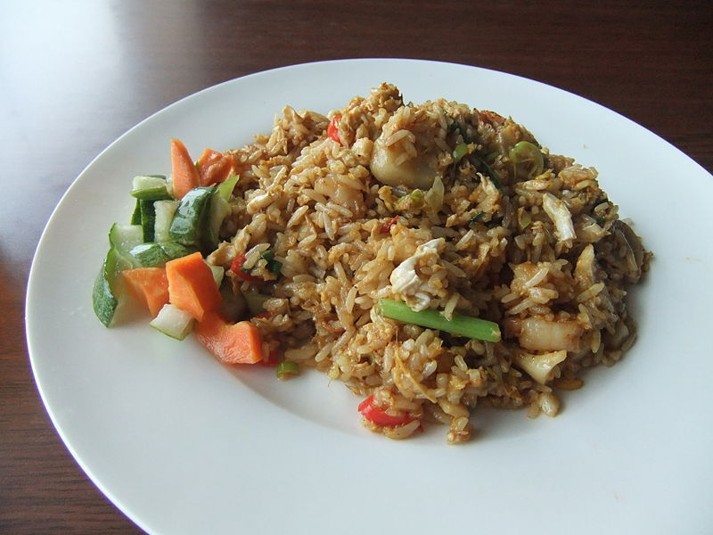

Nasi Goreng

Nasi Goreng is traditionally served with a fried egg and a side of fresh vegetables
(commonly plain juicy wedges of tomato and cucumber).
Both these side options are very typical in various parts of Asia to add protein and
vegetables to a plate to turn something carb-heavy into a meal.
Nasi Goreng is also a terrific Asian side dish option, something a little different
that packs a bit flavour of punch!
Ingredients:
- 300 gr long-grain rice
- 3 table spoon vegetable oil
- 4 large eggs, beaten
- 100 gr fine green beans, cut in half
- 2 chicken breasts, cut into small even chunks
- 180 gr pack large raw peeled prawns, cut in half
- 200 gr shallots, thinly sliced
- 20 gr garlic, finely chopped
- 2 medium-hot red chillies, deseeded and finely chopped
- 1 red bird's-eye chilli, sliced
- 1 medium carrot, thinly sliced
- 1 quantity Balinese spice paste
- 1 table spoon tomato puree
- 1 table spoon kecap manis
- 1 table spoon light soy sauce
- 8 spring onions, thinly sliced
To Serve
- half cucumber, sliced
- 2 medium tomatoes, sliced
- 4 table spoon crispy fried onions
- prawn crackers
Steps:
- Put the rice in a medium heavy-based saucepan and add 520ml water. Quickly bring to the boil, stir once and cover with a tight-fitting lid. Reduce the heat to low and cook for 10 mins. Uncover, fluff up with a fork and spread over a tray. Set aside to cool.
- Meanwhile, heat 1 tbsp oil in a large frying pan over a medium heat. Pour in the beaten egg and, as it begins to cook, use a spatula to bring large flakes of cooked egg into the middle of the omelette. Continue to cook like this for a couple of mins, then leave the rest of the egg to set completely. Flip the omelette over and transfer to a plate to cool before cutting it into long, thin shreds.
- Drop the beans into a pan of boiling salted water and cook for 3 mins. Drain, refresh under cold water and set aside.
- Heat the remaining oil in a wok or large, deep frying pan until almost smoking. Add the chicken and prawns, and stir-fry for 1 min. Tip in the shallots, garlic, chillies and carrots, and stir-fry for a further 2 mins until the carrot is just tender. Add the spice paste and stir-fry for 1 min more. Add the tomato purée, kecap manis, cooked rice and green beans, and stir-fry over a high heat for 2 mins. Add the soy sauce, spring onions and shredded omelette, and toss together.
- Spoon the nasi goreng onto warmed plates. Overlap the cucumber and tomato on the side of each plate, sprinkle over the crispy fried onions and serve with prawn crackers.
Back to top